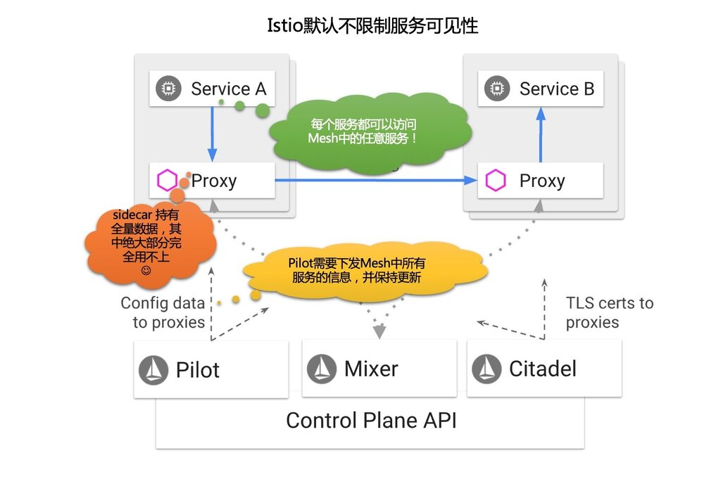
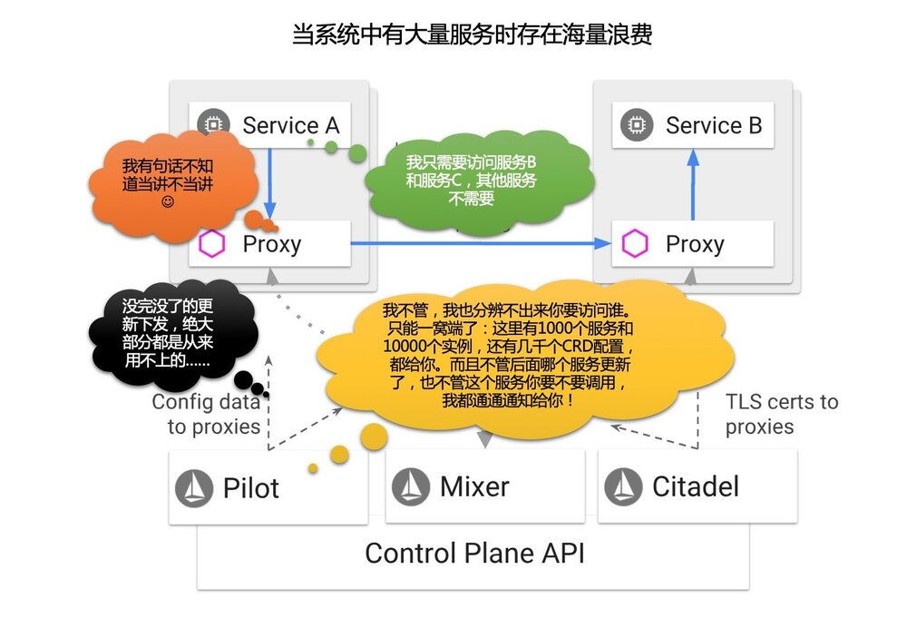
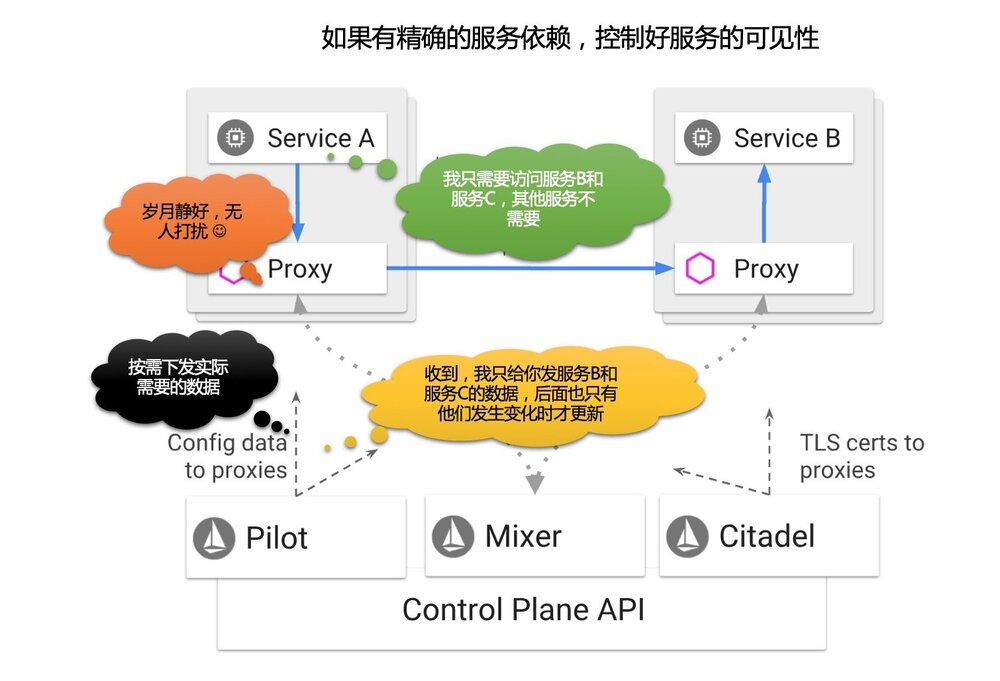
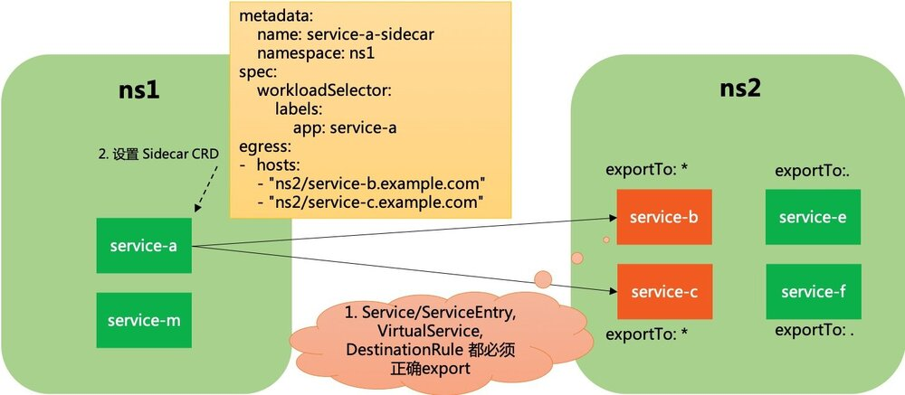

背景
对于服务的可见性，在 Istio 设计之初，是没有特别考虑的，或者说，Istio 一开始的假定，就是建立在如下这个前提下的：
Istio中的每个服务都可以访问Mesh中的任意服务
即在服务发现/请求转发这个层面，对服务访问的可见性不做任何限制，而通过安全机制来解决服务间调用权限的问题，如RBAC的使用。在这个思想的指导下，Pilot组件是需要将全量的服务信息（服务注册信息和服务治理信息）下发到 Sidecar，这样Sidecar才能在做到不管服务要请求的目标是哪个服务，都可以做到正确的路由。
这个机制在 demo 和小规模使用时不是问题，但是，在实际项目落地时，如果服务数量比较多，数以百计/数以千计，则立即显露出来：
- 下发的信息量太大：因此Pilot和Sidecar的CPU使用会很高，因为每次都要将全量的数据下发到每一个sidecar，需要编解码。Sidecar的内存使用也会增加。
- 下发的频度非常密集：系统中任何一个服务的变动，都需要通知到每一个Sidecar，即使这个Sidecar所在的服务完全不访问它

试想：假定 A 服务只需要访问 B/C 两个服务，但是在一个有1000个服务的系统中，A服务的 Sidecar 会不得不接收到其他 998 个服务的数据和每一次的变化通知。其所需有效数据和实际得到数据的比例高达 2:1000！

因此，在没有服务可见性控制的情况下，Pilot到Sidecar的数据下发的有效性低得可谓令人发指！
理想模式：同样假定 A 服务只需要访问 B/C 两个服务，如果能通过某个方式将这个信息（成为服务依赖或者服务可见性）提供出来，让Istio得到这个信息，那么在Pilot往A服务的Sidecar下发数据时，就可以做一个简单的过滤：只发送B/C服务的信息，和只在B/C服务发生变更时通知A。而这个简单过滤所带来的Pilot和Sidecar之间数据下发的性能提升，是和系统内服务数量成线性关系，很容易就实现两个或者三个数量级的提升。

在Istio问世快2年之际，Istio终于开始正视这个问题——好吧，我坦白，在这一点上，我是有怨言的：Istio的工程实现中，对实际生产问题的考虑，非常不到位。
Istio1.1新动态
Istio 1.1 即将发布，这几天陆续看到新文章介绍istio1.1的新功能：
其中和服务可见性直接相关的内容主要是 Sidecar CRD 和 ExportTo 属性。
引用上面文章的内容，“鸿沟前的服务网格—Istio 1.1 新特性预览” 的介绍如下：
-
新增 Sidecar 资源
目前版本中，Sidecar 会包含整个网格内的服务信息，在 1.1 中，新建了 Sidecar 资源，通过对这一 CRD 的配置，不但能够限制 Sidecar 的相关服务的数量，从而降低资源占用，提高传播效率；还能方便的对 Sidecar 的代理行为做出更多的精细控制——例如对 Ingress 场景中的被代理端点的配置能力。
-
ExportTo
多个路由管理对象加入了这一字段，用于指定该资源的生效范围。
“Istio1.1 功能预告” 一文的介绍是：
-
新的sidecar：资源：在指定命名空间中使用sidecar资源时，支持定义可访问的服务范围，这样可以降低发给proxy的配置数量。在大规模的集群中，我们推荐给每个namespace增加sidecar对象。 这个功能主要是为了提升性能，减轻proxy计算的负担。
-
限制网络资源的生效范围：为所有的网络资源增加了exportTo的字段，用来表示此网络资源在哪些namespace中生效。这个字段目前只有两个值：
-
.表示此网络资源只在自己定义的namespace生效； -
*表示此网络资源在所有的namespace生效。
-
我们来围绕服务可见性，对Istio1.1新特性做一个深入了解。
ExportTo 属性
Istio 1.1 在 DestinationRule / ServiceEntry / VirtualService 三个 CRD 上新增加了 export_to 字段（忽略其他字段）：
message DestinationRule {
repeated string export_to = 4;
}
message ServiceEntry {
repeated string export_to = 7;
}
message VirtualService {
repeated string export_to = 6;
}
下面是 exportTo 的字段说明，以 destination rule 为例：
| 字段 | 类型 | 描述 |
|---|---|---|
exportTo |
string[] |
当前destination rule要导出的 namespace 列表。 应用于 service 的 destination rule 的解析发生在 namespace 层次结构的上下文中。 destination rule 的导出允许将其包含在其他 namespace 中的服务的解析层次结构中。 此功能为服务所有者和网格管理员提供了一种机制，用于控制跨 namespace 边界的 destination rule 的可见性。如果未指定任何 namespace，则默认情况下将 destination rule 导出到所有 namespace。值. 被保留，用于定义导出到 destination rule 被声明所在的相同 namespace ，类似的值*保留，用于定义导出到所有 namespaces. NOTE：在当前版本中，exportTo值被限制为.或*（即， 当前namespace或所有namespace）。 |
从此，对以上三个CRD的使用，都必须满足 exportTo 对namespace的要求，才能被正确引用。如 gateway CRD 的说明：
// NOTE: Only virtual services exported to the gateway's namespace
// (e.g., `exportTo` value of `*`) can be referenced.
// Private configurations (e.g., `exportTo` set to `.`) will not be
// available. Refer to the `exportTo` setting in `VirtualService`,
// `DestinationRule`, and `ServiceEntry` configurations for details.
repeated string hosts = 2;
k8s原生service
前面 exportTo 只能用于 DestinationRule / ServiceEntry / VirtualService ，对于我们最关注的 k8s 原生的 service对象没有涉及。而日常大多数服务都还是普通k8s服务，既然 ServiceEntry 这样Istio管理之外的服务都有可见性支持，没有理由不控制Istio内的服务。
在 ServiceEntry 的定义中，发现注释部分有如下说明：
message ServiceEntry {
// For a Kubernetes Service, the equivalent effect can be achieved by setting
// the annotation "networking.istio.io/exportTo" to a comma-separated list
// of namespace names.
repeated string export_to = 7;
}
对于k8s原生service，上面的注释说用 annotation “networking.istio.io/exportTo” 可以达到同样的效果。
翻了一下Istio最新的代码，install/kubernetes/helm/istio/charts/mixer/templates/service.yaml 的例子：
apiVersion: v1
kind: Service
metadata:
name: istio-{{ $key }}
namespace: {{ $.Release.Namespace }}
annotations:
networking.istio.io/exportTo: "*"
在pilot/pkg/serviceregistry/kube/conversion.go 文件中有这个annotation的常量定义：
// ServiceExportAnnotation specifies the namespaces to which this service should be exported to.
// "*" which is the default, indicates it is reachable within the mesh
// "." indicates it is reachable within its namespace
ServiceExportAnnotation = "networking.istio.io/exportTo"
只在 pilot/pkg/serviceregistry/kube/conversion.go 的convertService() 方法中使用，这个方法将k8s 的 api core 中的 v1.Service 转为 istio 抽象模型中的 service：
func convertService(svc v1.Service, domainSuffix string) *model.Service {
......
if svc.Annotations[ServiceExportAnnotation] != "" {
exportTo = make(map[model.Visibility]bool)
for _, e := range strings.Split(svc.Annotations[ServiceExportAnnotation], ",") {
exportTo[model.Visibility(e)] = true
}
}
}
逻辑很简单：用”,“将 annotation “networking.istio.io/exportTo” 的值拆开，然后转成对应 Visibility 对象作为key，以value为true保存起来。
Visibility 类型定义如下：
// Visibility defines whether a given config or service is exported to local namespace, all namespaces or none
type Visibility string
const (
// VisibilityPrivate implies namespace local config
VisibilityPrivate Visibility = "."
// VisibilityPublic implies config is visible to all
VisibilityPublic Visibility = "*"
// VisibilityNone implies config is visible to none
VisibilityNone Visibility = "~"
)
这里有三个特殊值，除了前面描述到的 . 和 * 之外，还有一个 ~ 表示 none，不过目前没有使用。
理论上说，这里可以通过 exportTo 字段（或者等效的 annotation “networking.istio.io/exportTo” ）指定特定的 namespace，比如”.,namespace1,namespace2”。但是目前文档中明确指出，只能使用 . 和 * 。
// NOTE: in the current release, the `exportTo` value is restricted to
// "." or "*" (i.e., the current namespace or all namespaces).
Sidecar CRD
在 Istio 1.1 中增加了新的CRD Sidecar，具体的定义可见 https://github.com/istio/api/blob/8463cba039d858e8a849847b872ecea50b0994df/networking/v1alpha3/sidecar.proto
从中摘录部分内容：
Sidecar描述了sidecar代理的配置，sidecar代理调解与其连接的工作负载的 inbound 和 outbound 通信。 默认情况下，Istio将为网格中的所有Sidecar代理服务，使其具有到达网格中每个工作负载所需的必要配置，并在与工作负载关联的所有端口上接收流量。 Sidecar资源提供了一种的方法，在向工作负载转发流量或从工作负载转发流量时，微调端口集合和代理将接收的协议。 此外，可以限制代理在从工作负载转发 outbound 流量时可以达到的服务集合。
Sidecar CRD的其他功能我们暂时不展开，只看和服务可见性相关的内容，看看Sidecar CRD是如何限制可以到达的服务结合的。文档中给出了下面这个简单例子：
apiVersion: networking.istio.io/v1alpha3
kind: Sidecar
metadata:
name: default
namespace: prod-us1
spec:
egress:
- hosts:
- "prod-us1/*"
- "prod-apis/*"
- "istio-system/*"
这个示例在 prod-us1 命名空间中声明了Sidecar资源，该资源配置命名空间中的sidecars，允许出口流量到prod-us1，prod-apis和istio-system命名空间中的公共服务。
但是注意这个CRD需要配合前面的 exportTo 字段使用：即如果A服务(namespace为ns1)要访问B服务(namespace为ns2)，则需要：
- 首先需要B服务申明 exportTo 到 ns1 中
- 然后再通过Sidecar CRD 设置 ns1 的 egress 的 hosts 为
"ns2/*"
这样通过 exportTo 字段 + Sidecar.egress.hosts 字段的配合，实现了对服务可见性的限制。
基本原理不复杂，具体实现时还有一些细节需要注意。
WorkloadSelector
上面的例子没有使用WorkloadSelector，因此设置的是整个 namespace 下所有的Sidecar的行为，或者说默认行为。可以通过带有 WorkloadSelector 的 Sidecar 资源来覆盖默认设置，hosts中也可以不用通配符，实现精确控制。
例如下面的例子，就明确限制了 ns1 下的 服务 service-a 可以访问 ns2 下的服务：
apiVersion: networking.istio.io/v1alpha3
kind: Sidecar
metadata:
name: service-a-sidecar
namespace: ns1
spec:
workloadSelector:
labels:
app: service-a
egress:
- hosts:
- "ns2/*"
hosts字段
hosts 字段也是可以灵活设置的。文档中描述 hosts 字段为：
必需：以 namespace/dnsName 格式被监听器暴露的的一个或多个服务主机。在指定namespace内与dnsName匹配的服务将被暴露（也就是可以访问）。相应的服务可以是服务注册表中的服务（例如，Kubernetes或cloud foundry服务）或使用ServiceEntry或 VirtualServicec 配置指定的服务。还可以使用同一名称空间中的任何关联的DestinationRule。
应使用FQDN格式指定dnsName，在最左侧的组件中可以包含通配符（例如，prod / * .example.com）。将dnsName设置为 * 可以从指定的命名空间中选择所有服务（例如，prod/.example.com）。命名空间也可以设置为 * 以从任何可用的命名空间中选择特定服务（例如，"/ foo.example.com”）。
前面的例子我们使用了通配符，也可以不使用通配符而明确的指定特定可以访问的服务：
apiVersion: networking.istio.io/v1alpha3
kind: Sidecar
metadata:
name: service-a-sidecar
namespace: ns1
spec:
workloadSelector:
labels:
app: service-a
egress:
- hosts:
- "ns2/service-b.example.com"
- "ns2/service-c.example.com"
当然，记得有个前提条件：service-b/service-c 的 k8s service 和相关的 CRD（DestinationRule / ServiceEntry / VirtualService）都必须正确的设置 exportTo。

备注：这里设计的有点复杂，按照这个思路，如果要实现上述的精确限制，多个环节都必须明确设置。一旦有一个地方出错，就会无法访问，然后debug的过程估计不会轻松。
小结：Istio1.1 通过 exportTo 字段 + Sidecar.egress.hosts 字段的配合，实现了对服务可见性的约束
代码实现
pilot/pkg/model/push_context.go 中，PushContext 在保存 Service 和 VirtualService 信息时，都分为 private 和 public 两个结构：
type PushContext struct {
// privateServices are reachable within the same namespace.
privateServicesByNamespace map[string][]*Service
// publicServices are services reachable within the mesh.
publicServices []*Service
privateVirtualServicesByNamespace map[string][]Config
publicVirtualServices []Config
}
以服务为例，会按照 ExportTo 字段的可见性设置来进行区分，将服务分别存放：
// Caches list of services in the registry, and creates a map
// of hostname to service
func (ps *PushContext) initServiceRegistry(env *Environment) error {
......
for _, s := range allServices {
ns := s.Attributes.Namespace
if len(s.Attributes.ExportTo) == 0 {
if ps.defaultServiceExportTo[VisibilityPrivate] {
ps.privateServicesByNamespace[ns]
= append(ps.privateServicesByNamespace[ns], s)
} else if ps.defaultServiceExportTo[VisibilityPublic] {
ps.publicServices = append(ps.publicServices, s)
}
} else {
if s.Attributes.ExportTo[VisibilityPrivate] {
ps.privateServicesByNamespace[ns] =
append(ps.privateServicesByNamespace[ns], s)
} else {
ps.publicServices = append(ps.publicServices, s)
}
}
}
ps.ServiceByHostname[s.Hostname] = s
ps.ServicePort2Name[string(s.Hostname)] = s.Ports
......
}
当给具体的proxy下发数据时：
// Services returns the list of services that are visible to a Proxy in a given config namespace
func (ps *PushContext) Services(proxy *Proxy) []*Service {
// 如果 proxy 有 sidecar scope，则从 sidecar scope 获取 service 列表
if proxy != nil && proxy.SidecarScope != nil && proxy.SidecarScope.Config != nil && proxy.Type == SidecarProxy {
return proxy.SidecarScope.Services()
}
out := []*Service{}
// 没有 sidecar scope，就只考虑 exportTo 的影响
if proxy == nil {
for _, privateServices := range ps.privateServicesByNamespace {
out = append(out, privateServices...)
}
} else {
// 只给当前 proxy 所在 namespace 的 private 服务
out = append(out, ps.privateServicesByNamespace[proxy.ConfigNamespace]...)
}
// 和 public 的服务
out = append(out, ps.publicServices...)
return out
}
SidecarScope 的说明，来自代码注释：
SidecarScope是 Sidecar resource 的包装器，带有一些预处理数据，用于确定给定 Sidecar 可访问的Service，VirtualService和 DestinationRule。 预先计算 Sidecar 的 Service，VirtualService和 DestinationRule 可以提高性能，因为我们不再需要为每个 Sidecar 计算此列表。 我们只需将 Sidecar 与 SidecarScope 相匹配。
type SidecarScope struct {
// Union of services imported across all egress listeners for use by CDS code.
services []*Service
}
预处理的细节就不继续展开了。
分析
从目前Istio1.1给出的信息看，Istio开始着手限制服务间可见性，以“降低资源占用，提高传播效率”——虽然我个人认为这个本应该是设计伊始就应该考虑的问题，但是无论如何，有比没有好。
对于目前Istio1.1在限制服务可见性的做法，聊一下个人看法（保留后续更新修改的权利）：
- 总算提供了一个避免全量数据下发的方式，理论上在服务数量比较多时，通过严格约束服务间的可见性，是可以让 Pilot 到 Sidecar 的数据下发数量起码降低一到两个数量级（1/10到1/100），Pilot的CPU使用/Sidecar的CPU使用/Sidecar的内存占用 应该都可以有明显改善。当然这是理论推断，具体是否做到了还要看 Istio 1.1 的实际测试结果。拭目以待吧，希望是个惊喜。
- 可见性的边界，是 namespace，这一点我有些担心：k8s 的 namespace 在实践中一般不会做非常细致的细分，搞不好一个体系里面可能就几个甚至一个 namespace，以 namespace 为边界来决定服务的可见性我个人觉得粒度太大——这一点稍后咨询一下各方情况再做更新。
- 设置上有些麻烦，从上面的分析上看，要实现服务A对服务B的精确限制，需要设置服务B的exportTo，包括k8s Service/Istio VitualService/Istio Destination Rule，还要设置服务A的 Sidecar CRD，至少要设置4个地方。繁琐且容易出错，而且语义也不直白：我相信大部分同学如果没有看过类似本文这样的讲解，恐怕很难一下就把这里面的条条道道梳理清楚。
- 只是限制服务的可见性，而不是明确的强制要求管理服务间的静态依赖关系，后者其实是我，或者说我们团队想要的。服务可见性和服务静态依赖关系之间有语义上的明确差别：服务可见性不具备强制性的，是笼统的，是可以含糊一点的，从Istio的意图看主要是为了效率的提升（毕竟之前的做法太浪费资源）；而服务静态依赖关系是强制性的，依赖明确，设置精准，目标是为体系中的服务调用关系进行强力管控。
先写到这，稍后深入后再补充。